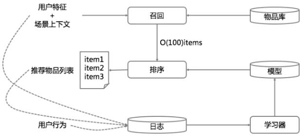
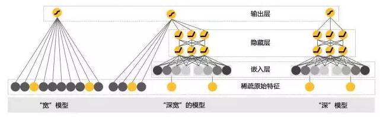
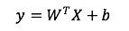
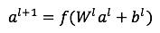
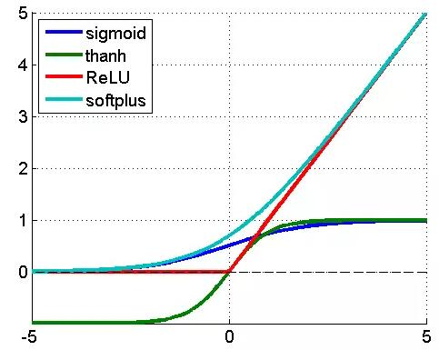
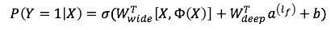
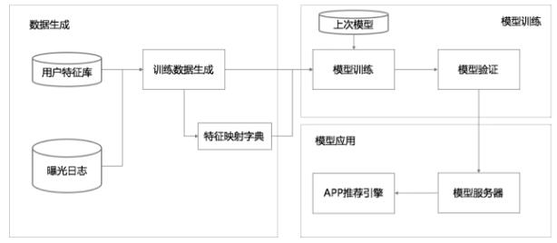
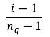
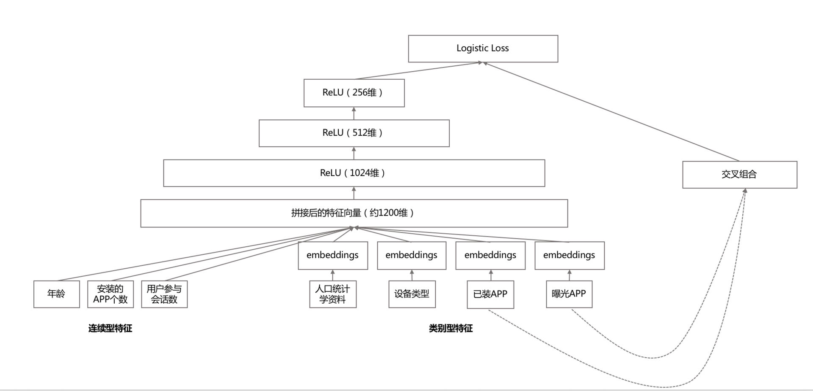
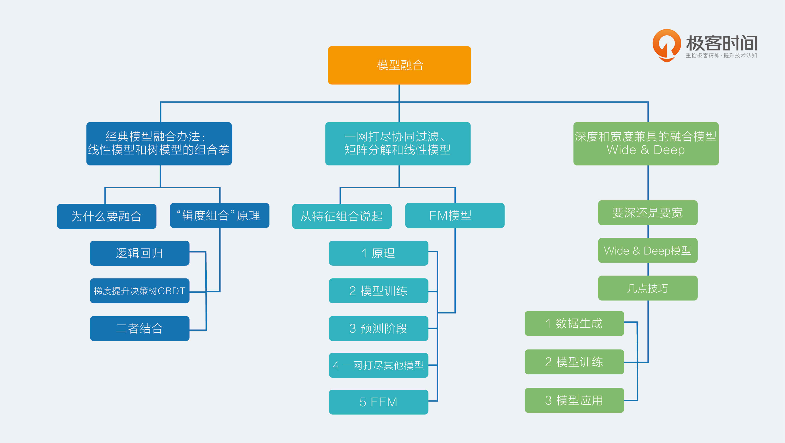

- 00 开篇词 用知识去对抗技术不平等.md.html
- 01 你真的需要个性化推荐系统吗_.md.html
- 02 个性化推荐系统有哪些绕不开的经典问题？.md.html
- 03 这些你必须应该具备的思维模式.md.html
- 04 画鬼容易画人难：用户画像的“能”和“不能”.md.html
- 05 从文本到用户画像有多远.md.html
- 06 超越标签的内容推荐系统.md.html
- 07 人以群分，你是什么人就看到什么世界.md.html
- 08 解密“看了又看”和“买了又买”.md.html
- 09 协同过滤中的相似度计算方法有哪些.md.html
- 10 那些在Netflix Prize中大放异彩的推荐算法.md.html
- 11 Facebook是怎么为十亿人互相推荐好友的.md.html
- 12 如果关注排序效果，那么这个模型可以帮到你.md.html
- 13 经典模型融合办法：线性模型和树模型的组合拳.md.html
- 14 一网打尽协同过滤、矩阵分解和线性模型.md.html
- 15 深度和宽度兼具的融合模型 Wide and Deep.md.html
- 16 简单却有效的Bandit算法.md.html
- 17 结合上下文信息的Bandit算法.md.html
- 18 如何将Bandit算法与协同过滤结合使用.md.html
- 19 深度学习在推荐系统中的应用有哪些_.md.html
- 20 用RNN构建个性化音乐播单.md.html
- 21 构建一个科学的排行榜体系.md.html
- 22 实用的加权采样算法.md.html
- 23 推荐候选池的去重策略.md.html
- 24 典型的信息流架构是什么样的.md.html
- 25 Netflix个性化推荐架构.md.html
- 26 总览推荐架构和搜索、广告的关系.md.html
- 27 巧妇难为无米之炊：数据采集关键要素.md.html
- 28 让你的推荐系统反应更快：实时推荐.md.html
- 29 让数据驱动落地，你需要一个实验平台.md.html
- 30 推荐系统服务化、存储选型及API设计.md.html
- 31 推荐系统的测试方法及常用指标介绍.md.html
- 32 道高一尺魔高一丈：推荐系统的攻防.md.html
- 33 和推荐系统有关的开源工具及框架介绍.md.html
- 34 推荐系统在互联网产品商业链条中的地位.md.html
- 35 说说信息流的前世今生.md.html
- 36 组建推荐团队及工程师的学习路径.md.html
- 加餐 推荐系统的参考阅读.md.html
- 结束语 遇“荐”之后，江湖再见.md.html
- 捐赠
15 深度和宽度兼具的融合模型 Wide and Deep
我在前面已经提到过一个事实，就是推荐系统的框架大都是多种召回策略外挂一个融合排序。召回策略的姿势繁多，前面的专栏文章已经涉及了一部分内容。今天我们继续说融合排序。
要深还是要宽
融合排序，最常见的就是CTR预估，你一定不要把自己真的只局限在C上，这里说的CTR预估的C，可以是产品中的任何行为，视频是不是会看完，看完后是不是会收藏，是不是会分享到第三方平台，查看的商品是不是会购买等等，都可以看成那个可以被预估发生概率的CTR。
CTR预估的常见做法就是广义线性模型，如 Logistic Regression，然后再采用特征海洋战术，就是把几乎所有的精力都放在搞特征上：挖掘新特征、挖掘特征组合、寻找新的特征离散方法等等。
这种简单模型加特征工程的做法好处多多：
- 线性模型简单，其训练和预测计算复杂度都相对低；
- 工程师的精力可以集中在发掘新的有效特征上，俗称特征工程；
- 工程师们可以并行化工作，各自挖掘特征；
- 线性模型的可解释性相对非线性模型要好。
特征海洋战术让线性模型表现为一个很宽广（Wide）的模型，可以想象逻辑回归中那个特征向量在特征工程的加持下，越来越宽的样子。
最近十年，是深度学习独步天下的十年，犹如异军突起，一路摧城拔寨，战火自然也烧到了推荐系统领域，用深度神经网络来革“线性模型+特征工程”的命，也再自然不过。
用这种“深模型”升级以前的“宽模型”，尤其是深度学习“端到端”的诱惑，可以让每天沉迷搞特征无法自拔的工程师们主动投怀送抱。
深度学习在推荐领域的应用，其最大好处就是“洞悉本质般的精深”，优秀的泛化性能，可以给推荐很多惊喜。
硬币总有正反面，深度模型的泛化强于线性模型，也会导致推荐有时候看上去像是“找不着北”，就是大家常常自问的那句话：“不知道这是怎么推出来的？”用行话说，就是可解释性不好。
以前全面搞特征时，你叫人家“宽模型”小甜甜，现在新模型换旧模型，“深模型”一出，就叫“宽模型”牛夫人，这样不好，还是要两者合作，才能最大限度地发挥效果。
因此，Google在2016年就发表了他们在Google Play应用商店上实践检验过的CTR预估方法：Wide & Deep模型，让两者一起为用户们服务，这样就取得了良好效果。
下面，我就为你详细介绍一下这个深宽模型。
Wide & Deep模型
一个典型的推荐系统架构，其实很类似一个搜索引擎，搜索由检索和排序构成。推荐系统也有召回和排序两部构成，不过，推荐系统的检索过程并不一定有显式的检索语句，通常是拿着用户特征和场景特征去检索召回，其中用户特征也就是在前面的专栏中提到的用户画像。
示意图如下.

简单描述一下这个示意图。
首先使用用户特征和上下文场景特征从物品库中召回候选推荐结果，比如得到100个物品，然后用融合模型对这100个物品做最终排序，输出给用户展示。
同时开始记录展示日志和用户行为日志，再把收集到的日志和用户特征、上下文场景特征、物品特征拉平成为模型的训练数据，训练新的模型，再用于后面的推荐，如此周而复始。
今天要说的深宽模型就是专门用于融合排序的，分成两部分来看。一部分是线性模型，一部分是深度非线性模型。整个示意图如下：- 
我来解释一下这个示意图，这个示意图有三部分。最左边是宽模型，中间是深宽模型，最右边是纯的深度模型。
首先，线性模型部分，也就是“宽模型”，形式如下：

再次强调一下，这是线性模型的标准形式，逻辑回归只是在这基础上用sigmoid函数变换了一下。
模型中的X是特征，W是权重，b是模型的偏置，也是线性模型的截距。线性模型中常用的特征构造手段就是特征交叉。
例如：“性别=女 and 语言=英语。”就是由两个特征组合交叉而成，只有当“性别=女”取值为1，并且“语言=英语”也取值为1时，这个交叉特征才会取值为1。线性模型的输出这里采用的Logistic Regression。
好，现在把头转到右边，看看深度模型。深度模型其实就是一个前馈神经网络。
深度模型对原始的高维稀疏类别型特征，先进行嵌入学习，转换为稠密、低维的实值型向量，转换后的向量维度通常在10-100这个范围。
这里的嵌入学习，就是先随机初始化嵌入向量，再直接扔到整个前馈网络中，用目标函数来优化学习。
由于本专栏并不会专门讲深度学习的原理，后面还会继续讲到深度学习和推荐系统的结合使用，所以有必要在这里简单普及一下深度学习的基本概念，不然我自顾自地开车，你可能会觉得辣眼睛。
就以这里的“深”模型，也就是示意图中最右边的图为例，一个深度神经网络由输入层，隐藏层，输出层构成。
那这个和逻辑回归的区别在哪呢？你可以认为逻辑回归是个残缺的神经网络，只有输入层和输出层，没有隐藏层。
逻辑回归的输入层就是特征向量，原来我们熟悉的特征权重，就是神经网络的参数，就存在于这个残缺的神经网络输入层和输出层的连线上，后面都可以这么理解，深度神经网络参数都在那些连线上。
这个残缺神经网络的输出层做了两件事，这时特征值在经过连线送到输出层时已经乘以了连线上的参数，第一件事就是把这些值加起来，第二件事就是用sigmoid函数变换一下。
把逻辑回归当成一个残缺的神经网络理解后，再回头看真正的神经网络，这里多了一个隐藏层，这个多出来的隐藏层干的事就是刚才提到的输出层的两板斧。
只不过一个隐藏层可以有多个神经元在干这两件事，隐藏层的这多个神经元就相当于输出层的输入层。
这个增加的隐藏层有什么意义呢？意义就是给模型提供了非线性转换。
所谓深度学习，就是深度神经网络，就是有不止一层的隐藏层存在。层数越多，非线性越强，模型越复杂。还有两点需要说明：
- 隐藏层的激活函数不一定是sigmoid函数，甚至往往不用sigmoid函数；
- 输出层的函数也不一定是sigmoid函数，这个根据预测目标而定，回归任务就是i 直接输出求和部分，二分类是sigmoid函数，多分类则是softmax。
好，插播深度学习概念结束，回到主题来。深模型中，每一个隐藏层激活方式表示如下。

其中l表示第l个隐藏层，f是激活函数，通常选用ReLU，也叫整流线性单元，为什么选用ReLU而不是sigmoid函数，原因主要是sigmoid函数在误差反向传播时梯度容易饱和。
如果你不明白这句话可以不用管，不影响你上车。这里我用示意图说明了一下常用激活函数的形状。

- 紫色是sigmoid函数，就是逻辑回归用的那个，输入值是任意范围，输出是0到1之间；
- 草绿色是反正切函数，和sigmoid函数样子很像，输入值是任意范围，输出是-1到1之间；
- 红色就是ReLU函数，当输入小于0时，输出为0，当输入大于0时，输出等于输入；
- 蓝色是softplus函数，是一条渐近线，输入趋向于负无穷时，输出趋于0，输入趋于正无穷时，输出趋向于等于输入。
最后，看看两者的融合，即深宽模型。深模型和宽模型，由逻辑回归作为最终输出单元，深模型最后一个隐藏层作为特征接入逻辑回归，宽模型的原始特征与之一起接入逻辑回归，然后训练参数。
参数学习就是通常说的端到端，把深模型和宽模型以及最终融合的权重放在一个训练流程中，直接对目标函数负责，不存在分阶段训练。它与机器学习中的集成学习方法有所区别，集成学习的子模型是独立训练的，只在融合阶段才会学习权重，这里是整体。
把深宽模型的最后输出过程表示成公式就是：- 
其中，Y是我们要预估的行为，二值变量，如购买，或点击，Google的应用场景为“是否安装APP”。σ是sigmoid函数，\(W_wide^T \)宽模型的权重，Φ(X)是宽模型的组合特征，\(W_deep^T \)应用在深模型输出上的权重，\(a^(l_f ) \)是深模型的最后一层输出，b是线性模型的偏置。
几点技巧
这个深宽模型已经在TensorFlow中有开源实现，具体落地时整个数据流如下图所示。

整个流程分为三大块：数据生成，模型训练，模型应用。
1数据生成
数据生成有几个要点：
每一条曝光日志就生成一条样本，标签就是1/0，安装了App就是1，否则就是0。
将字符串形式的特征映射为ID，需要用一个阈值过滤掉那些出现样本较少的特征。
对连续值做归一化，归一化的方法是：对累积分布函数P(X<=x)划分nq个分位，落入第i个分位的特征都归一化为下图所示。

2模型训练

整个模型的示意如图所示。其要点，在深度模型侧：
- 每个类别特征embedding成一个32维向量；
- 将所有类别特征的embedding变量连成一个1200维度左右的大向量；
- 1200维度向量就送进三层以ReLU作为激活函数的隐藏层；
- 最终从Logistic Regreesion输出。
宽模型侧就是传统的做法：特征交叉组合。
当新的样本集合到来时，先是用上一次的模型来初始化模型参数，然后在此基础上进行训练。
新模型上线前，会先跑一遍，看看会不会出事，算是一个冒烟测试。
3 模型应用
模型验证后，就发布到模型服务器。模型服务，每次网络请求输入的是来自召回模块的App候选列表以及用户特征，再对输入的每个App进行评分。评分就是用我们的“深宽模型”计算，再按照计算的CTR从高到低排序。
为了让每次请求响应时间在10ms量级，每次并不是串行地对每个候选App计算，而是多线程并行，将候选App分成若干并行批量计算。
正因为有这些小的优化点，GooglePlay的App推荐服务，就是在峰值时每秒计算千万级的App。
总结
将传统的“宽模型”和新的“深模型”结合，虽然更多的是一种工程上的创新，但是非常有实用性，模型也容易很理解。
简单画一下全文重点。
- 深宽模型是一个结合了传统线性模型和深度模型的工程创新。
- 这个模型适合高维稀疏特征的推荐场景，稀疏特征的可解释性加上深度模型的泛化性能，双剑合璧。
- 这个模型已经开源在TensorFlow中，大大减小了落地成本，感兴趣可自行取用。
- 为了提高模型的训练效率，每一次并不从头开始训练，而是用上一次模型参数来初始化当前模型的参数。
- 将类别型特征先做嵌入学习，再将嵌入稠密向量送入深度模型中。
- 为了提高服务的响应效率，对每次请求要计算的多个候选App采用并行评分计算的方式，大大降低响应时间。
嗯，这真的是一个既博学又精深的模型啊。
最后一点后话，这个模型在线上效果还是不错的，以GooglePlay的App推荐效果为例，用户安装表现良好，对照实验结果如图所示。
可以看到，线上效果直接相对于对照组（纯线性模型+人工特征）有3.9%的提升，但是线下的AUC值提高并不明显，这其实也给你提了个问题，AUC值是不是最佳的线下评估方式？欢迎留言一起讨论。
本周知识图

© 2019 - 2023 Liangliang Lee. Powered by gin and hexo-theme-book.